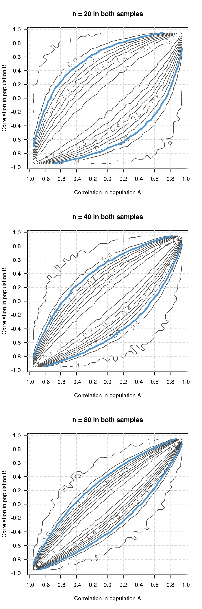
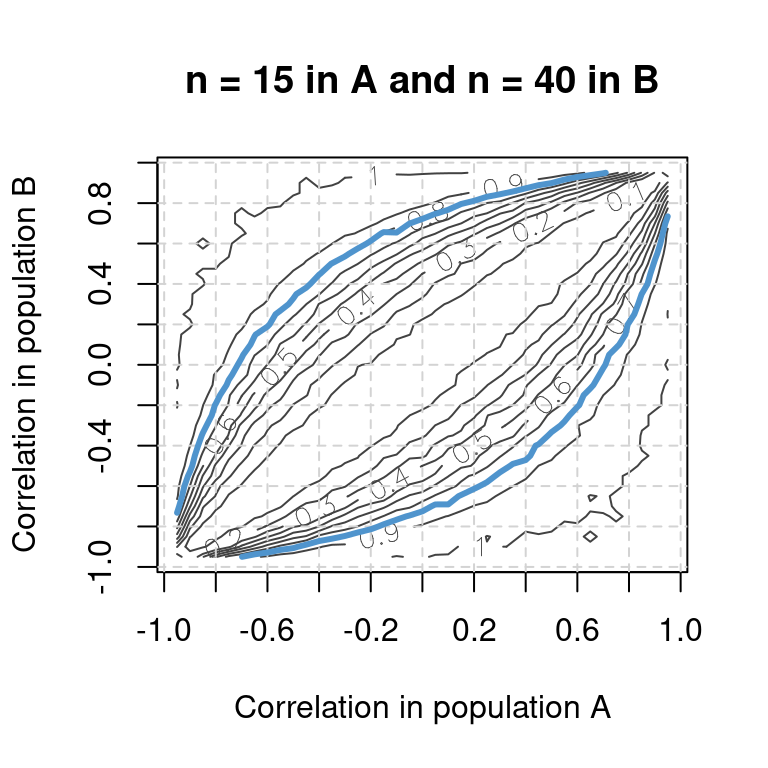

Power simulations for comparing independent correlations
Every now and then, researchers want to compare the strength of a correlation between two samples or studies. Just establishing that one correlation is significant while the other isn’t doesn’t work – what needs to be established is whether the difference between the two correlations is significant. I wanted to know how much power a comparison between correlation coefficients has, so I wrote some simulation code to find out.
The results
The contour plots below show the power of comparisons with sample sizes of 2×20, 2×40 and 2×80 observations for all combinations of population correlation coefficients. For instance, the first contour plot shows that you have about 90% power to find a significant difference between two correlation coefficients if the true population correlation in population A (x-axis) is 0.4 and -0.6 in population B (y-axis) and both sample contain 20 observations. If the correlation in population B is -0.2, however, you have less than 50% power. In blue is the contour line for 80% power for reference.
For unequal sample sizes, the contour plot might look like this:

Conclusions
Not really any new insights, but a good opportunity to stress once again that The difference between “significant” and “not significant” is not itself statistically significant. And I got to play around with the outer and mapply functions, which are quite useful for avoiding for-loops in simulations (see below).
Caveat
These simulations estimate the power for comparisons of independent correlations. Independent correlations are correlations computed for different samples (or different studies). An example of dependent correlations would be when you measure a variable, e.g. Italian proficiency, and correlate it to two other variables (e.g., French proficiency and Spanish proficiency) using the same participants. Since you used the same participants, there will exist some intercorrelation between French proficiency and Spanish proficiency, which needs to be taken into account when comparing the correlations between Italian and French proficiency on the one hand and Italian and Spanish proficiency on the other.
Simulation code
First load the MASS and psych packages (run install.packages(c("MASS", "psych")) if they aren’t installed yet).
library(MASS)
library(psych)Using the mvrnorm function from the MASS package, we can generate samples drawn from a bivariate normal distribution with a specific population correlation coefficient (the numbers of the antidiagonal in the Sigma parameter; in this example: 0.3). With cor we compute the sample correlation coefficients for these samples; these will differ from sample to sample.
# Example
# Generate sample with n = 25 and r = 0.25
sample25 <- mvrnorm(25, mu = c(0, 0), # means of the populations, doesn't matter
Sigma = matrix(c(1, 0.3,
0.3, 1), ncol = 2))
# Compute correlation matrix
cor(sample25[,1], sample25[,2])[1] 0.1376853With the r.test function from the psych package, we can compute the significance of the difference between two sample correlation coefficients. In this case, the correlation coefficients were computed for independent samples, hence the r12 and r34 parameters are specified.
# Example
# Compute p-value for difference btwn sample cors
# of 0.5 (n = 20) and 0.2 (n = 50)
r.test(n = 20, r12 = 0.5,
n2 = 50, r34 = 0.2)$p[1] 0.2207423With that out of the way, we now write a new function, compute.p, that generates two samples of sizes n1 and n2, respectively, from bivariate normal distributions with population correlations of popr12 and popr34, respectively.
compute.p <- function(popr12, popr34, n1, n2) {
return(r.test(n = n1, n2 = n2,
r12 = cor(mvrnorm(n1, mu = c(0, 0),
Sigma = matrix(c(1, popr12,
popr12, 1), ncol = 2)))[1,2],
r34 = cor(mvrnorm(n2, mu = c(0, 0),
Sigma = matrix(c(1, popr34,
popr34, 1), ncol = 2)))[1,2])$p)
}
# Example
compute.p(n1 = 20, popr12 = 0.5, n2 = 50, popr34 = 0.2)Now we write another function, compute.power, that takes compute.p, runs it, say, 1000 times, and returns how many p-values lie below 0.05 – i.e., the comparison’s estimated power.
compute.power <- function(n.sims = 1000, popr12, popr34, n1, n2) {
return(mean(replicate(n.sims,
compute.p(popr12 = popr12, popr34 = popr34,
n1 = n1, n2 = n2)
) <= 0.05)
)
}
# Example
compute.power(n.sims = 1000,
n1 = 20, popr12 = 0.5,
n2 = 50, popr34 = 0.2)Here’s where the R fun begins. I want to compute the power not only for a single comparison, but for nearly the whole popr12 v. popr34 spectrum of possible comparisons: -0.95 v. -0.90, -0.95 v. -0.85, …, 0.7 v. -0.3 etc. All relevant correlations are stored in corrs:
corrs <- seq(-0.95, 0.95, 0.05)Using the outer function, I generate a grid featuring every possible combination of coefficients in corrs and run compute.power on each combination using mapply. Here, I estimate the power for a comparison with two samples of 20 observations.
results20 <- outer(corrs, corrs,
function(x, y) mapply(compute.power,
popr12 = x, popr34 = y,
n1 = 20, n2 = 20,
n.sims = 1000))With contour, the results matrix is then visualised:
contour(x = corrs, y = corrs, z = results20, nlevels = 10,
labcex = 0.9, col = "gray26", at = seq(-1, 1, 0.2),
main = "n = 20 in both samples",
xlab = "Correlation in population A",
ylab = "Correlation in population B")
abline(v = seq(-1, 1, 0.2), lwd = 1, col = "lightgray", lty = 2)
abline(h = seq(-1, 1, 0.2), lwd = 1, col = "lightgray", lty = 2)
contour(x = corrs, y = corrs, z = results20, levels = 0.80,
drawlabels = FALSE, at = seq(-1, 1, 0.2),
add = TRUE, lwd = 3, col = "steelblue3")This code could probably be optimised a bit; the power for the comparison between -0.5 and 0.3 is obviously identical to the power for the comparison between 0.5 and -0.3, for instance.
Software versions
devtools::session_info()─ Session info ───────────────────────────────────────────────────────────────
setting value
version R version 4.3.1 (2023-06-16)
os Ubuntu 22.04.3 LTS
system x86_64, linux-gnu
ui X11
language en_US
collate en_US.UTF-8
ctype en_US.UTF-8
tz Europe/Zurich
date 2023-08-26
pandoc 3.1.1 @ /usr/lib/rstudio/resources/app/bin/quarto/bin/tools/ (via rmarkdown)
─ Packages ───────────────────────────────────────────────────────────────────
package * version date (UTC) lib source
cachem 1.0.6 2021-08-19 [2] CRAN (R 4.2.0)
callr 3.7.3 2022-11-02 [1] CRAN (R 4.3.1)
cli 3.6.1 2023-03-23 [1] CRAN (R 4.3.0)
codetools 0.2-19 2023-02-01 [4] CRAN (R 4.2.2)
crayon 1.5.2 2022-09-29 [1] CRAN (R 4.3.1)
devtools 2.4.5 2022-10-11 [1] CRAN (R 4.3.1)
digest 0.6.29 2021-12-01 [2] CRAN (R 4.2.0)
ellipsis 0.3.2 2021-04-29 [2] CRAN (R 4.2.0)
evaluate 0.15 2022-02-18 [2] CRAN (R 4.2.0)
fastmap 1.1.0 2021-01-25 [2] CRAN (R 4.2.0)
fs 1.5.2 2021-12-08 [2] CRAN (R 4.2.0)
glue 1.6.2 2022-02-24 [2] CRAN (R 4.2.0)
htmltools 0.5.5 2023-03-23 [1] CRAN (R 4.3.0)
htmlwidgets 1.6.2 2023-03-17 [1] CRAN (R 4.3.1)
httpuv 1.6.11 2023-05-11 [1] CRAN (R 4.3.1)
jsonlite 1.8.7 2023-06-29 [1] CRAN (R 4.3.1)
knitr 1.39 2022-04-26 [2] CRAN (R 4.2.0)
later 1.3.1 2023-05-02 [1] CRAN (R 4.3.1)
lattice 0.21-8 2023-04-05 [4] CRAN (R 4.3.0)
lifecycle 1.0.3 2022-10-07 [1] CRAN (R 4.3.0)
magrittr 2.0.3 2022-03-30 [1] CRAN (R 4.3.0)
MASS * 7.3-60 2023-05-04 [4] CRAN (R 4.3.1)
memoise 2.0.1 2021-11-26 [2] CRAN (R 4.2.0)
mime 0.10 2021-02-13 [2] CRAN (R 4.0.2)
miniUI 0.1.1.1 2018-05-18 [1] CRAN (R 4.3.1)
mnormt 2.1.1 2022-09-26 [1] CRAN (R 4.3.1)
nlme 3.1-162 2023-01-31 [4] CRAN (R 4.2.2)
pkgbuild 1.4.2 2023-06-26 [1] CRAN (R 4.3.1)
pkgload 1.3.2.1 2023-07-08 [1] CRAN (R 4.3.1)
prettyunits 1.1.1 2020-01-24 [2] CRAN (R 4.2.0)
processx 3.8.2 2023-06-30 [1] CRAN (R 4.3.1)
profvis 0.3.8 2023-05-02 [1] CRAN (R 4.3.1)
promises 1.2.0.1 2021-02-11 [1] CRAN (R 4.3.1)
ps 1.7.5 2023-04-18 [1] CRAN (R 4.3.1)
psych * 2.3.6 2023-06-21 [1] CRAN (R 4.3.1)
purrr 1.0.1 2023-01-10 [1] CRAN (R 4.3.0)
R6 2.5.1 2021-08-19 [2] CRAN (R 4.2.0)
Rcpp 1.0.11 2023-07-06 [1] CRAN (R 4.3.1)
remotes 2.4.2 2021-11-30 [2] CRAN (R 4.2.0)
rlang 1.1.1 2023-04-28 [1] CRAN (R 4.3.0)
rmarkdown 2.21 2023-03-26 [1] CRAN (R 4.3.0)
rstudioapi 0.14 2022-08-22 [1] CRAN (R 4.3.0)
sessioninfo 1.2.2 2021-12-06 [2] CRAN (R 4.2.0)
shiny 1.7.4.1 2023-07-06 [1] CRAN (R 4.3.1)
stringi 1.7.12 2023-01-11 [1] CRAN (R 4.3.1)
stringr 1.5.0 2022-12-02 [1] CRAN (R 4.3.0)
urlchecker 1.0.1 2021-11-30 [1] CRAN (R 4.3.1)
usethis 2.2.2 2023-07-06 [1] CRAN (R 4.3.1)
vctrs 0.6.3 2023-06-14 [1] CRAN (R 4.3.0)
xfun 0.39 2023-04-20 [1] CRAN (R 4.3.0)
xtable 1.8-4 2019-04-21 [1] CRAN (R 4.3.1)
yaml 2.3.5 2022-02-21 [2] CRAN (R 4.2.0)
[1] /home/jan/R/x86_64-pc-linux-gnu-library/4.3
[2] /usr/local/lib/R/site-library
[3] /usr/lib/R/site-library
[4] /usr/lib/R/library
──────────────────────────────────────────────────────────────────────────────